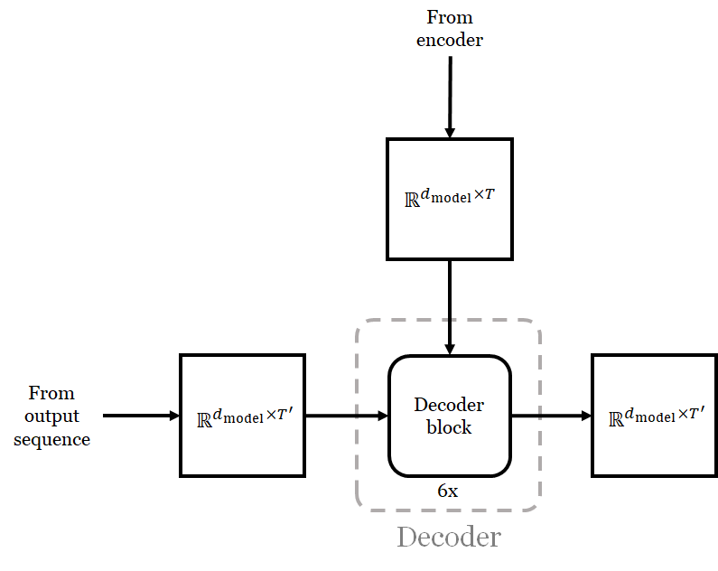

Understanding the Transformer
The "transformer" architecture was introducted in the paper "Attention Is All You Need" Vaswani et al. by back in 2017 [Vaswani et al. 2017]. It provides large improvements on machine translation tasks and allows language models to be trained in parallel with respect to tokens. It became a de facto standard in NLP tasks.
Vision tasks, on the other hand, have been dominated by CNNs. However, in 2021, the transformer has emerged as a popular alternative, and it seems that people are now using it for everything [Khan et al. 2021].
This note is written as I try to understand the transformer architecture in order to keep up with current research. Upon skimming the original paper, I found it very hard to read because I was not familiar with the context in which the paper was written. As a result, I will be rereading it with the help of other expository articles such as those by Lilian Weng, Alexander Rush, Jay Alammar, and Ricardo Kleinlien.
1 BLEU Score
- The Vaswani et al. paper introduces a new architecture for machine translation. It was evaluated on two tasks: English-to-German and English-to-French.
- The paper uses the the BLEU score, proposed in 2002 [Panineni et al. 2002], to measure the performance of its new architecture.
- To compute a BLUE score, we need a candidate translation produced by a machine, and a number of reference translations produced by human.
-
The gist of BLUE is that a good candidate translation would have
more $n$-grams matches with the reference translations than bad ones.
- "The primary programming task for a BLEU implementor is to compare $n$-grams of the candidate with the $n$-grams of the reference translation and count the number of matches. These matches are position-independent. The more the matches, the better the candidate translation is."
-
The BLEU paper defines the metric in several steps:
- It defines a notion of "modified $n$-gram precision" where a candidate translation is penalized for using too many of the same $n$-grams. The precision is computed on a sentence-by-sentence basis, and a candidate sentence is compared with respect to multiple reference sentences.
- It specificies how to combine modified $n$-gram precisions of multiple sentences.
-
It specifies how to combine modified $n$-gram precisions for different
$n$s.
- Typically, we compute them up to $n = 4$.
- It specifies how to penalizes candidate sentences that are too short.
- In the end, the BLEU score is a number between $0$ and $1$. However, papers typically reports $\mathrm{score} \times 100$ instead.
-
The scores that the paper achieved was as followed:
English-to-German English-to-French Transformer 28.4 41.8 SOTA at the time [Gehring et al. 2017] 26.36 41.29
2 Autoregressive Sequence Transduction
-
In NLP tasks, text is split into "tokens."
- A token roughly corresponds to a word.
- However, a token can also take into account word stems, punctuations, and elements such as emojis.
- We use "tokenizers" such as the Standford Tokenizer to split text into tokens.
-
Somehow, the problem of transformation a sequence (of tokens) to another
sequence (of tokens) is called sequence transduction by the NLP
community [Graves 2012].
- Machine translation is an instance of the sequence transduction problem.
-
Mathematically, the sequence transduction task is defined as follows:
- The input is the sequence $\ve{x} = (x_1, x_2, \dotsc, x_{T})$ where the $x_i$'s are tokens. The last work is always a special token <EOS> that indicates the end of the sentence.
- The output is another sequence of tokens $\ve{y} = (y_1, y_2, \dotsc, y_{T'})$ such that the conditional probability $$p(\ve{y}|\ve{x})$$ is maximized.
- It is typical to produce the output $\ve{y}$ in an autoregressive way. In other words, we produce the output tokens one by one, and every output token depends on those that come before it. Mathematically, this means that: \begin{align*} p(\ve{y}|\ve{x}) &= p(y_1, \dotsc, y_{T'}|\ve{x}) \\ &= p(y_1|\ve{x}) p(y_2|\ve{x},y_1) p(y_3|\ve{x},y_1,y_2) \dotsb p(y_{T'}|\ve{x},y_1,y_2, \dotsc, y_{T'-1})\\ &= \prod_{i=1}^{T'} p(y_i|\ve{x},y_1,\dotsc,y_{i-1}). \end{align*}
- I have yet to find a sequence transduction model that produce all tokens at once.
-
When we construct a network to do such a task, we structure the network in the
following way:
-
The network receives two sequences of tokens as inputs:
- The full input sequence $\ve{x} = (x_1, x_2, \dotsc, x_T)$
-
The partially constructed output sequence $\ve{y}_{(i-1)} = (y_1, y_2, \dotsc, y_{i-1})$.
- This sequence can be empty.
- Suppose the output tokens come from a set $\mathcal{Y}$. For each $y \in \mathcal{Y}$, the network outputs a propability $p(y|\ve{x},y_1,y_2,\dotsc,y_{i-1})$ of $y$ being the next token.
-
The network receives two sequences of tokens as inputs:
-
The structure above lends itself to the following training algorithm:
- For any $(\ve{x},\ve{y})$ pair in the training set, we feed all possible $(\ve{x},\ve{y}_{(i-1)})$ pairs to the network.
- We optimize the network so that the output probability distribution is close to the probability distribution where $p(y_{i}|\ve{x},y_1,y_2,\dotsc,y_{i-1}) = 1$.
-
Producing the output at test time is more complicated.
- We need to find $\ve{y}$ where $p(\ve{y}|\ve{x}) = \prod_i p(y_i|\ve{x},y_1,\dotsc,y_{i-1})$ is maximized
- The function $p(y|\ve{x},y_1,y_2,\dotsc,y_{i-1})$ is the trained network.
- This is a graph search problem with a very large state space: the branching factor is $|V|$, which can be several thousands of ten thousands, depending on the language we work with.
-
A popular algorithm for constructing outputs at test time is the
beam search.
- It is a variant of breadth first search where only the $k$ best candidates (i.e. those having the highest probabilities) are expanded at each depth.
- The parameter $k$ is called the beam size.
- A variant of beam search that is used by many papers is the one introduced by Wu et al. [Wu et al. 2016], which introduces, among other things, a length normalization mechanism that helps longer outputs.
-
The transformer is an autoregressive sequence transducer.
- The model itself takes both the whole input sentence and a partially constructed output sentence, and it outputs the probability distribution of the next token.
- It uses beam search to construct the output sequence at test time. In particular, it uses the We et al.'s variant of beam search with a beam size of 4 and length penalty parameter $α$ of 0.6.
3 Sequence Transduction with seq2seq
- Prior to the transformer, recurrent neural networks (RNNs) are the primary tool to solve sequence transduction problems.
- In 2014, Suskever et al. introduced an autoregressive sequence transducer called seq2seq [Suskever et al. 2014]. The structure is that of an encoder-decoder.
-
The model employs two networks:
- The encoder takes in the tokens of the input sequence, one by one, and it produces an fixed-length embedding of the sequence, called the context vector.
- The decoder produces the output sequence, one token at a time. Its initial hidden state is initialized to be the output of the encoder.
-
In the context of machine translation:
- We can intrepret the context vector as the "thought" that the input sequence represents.
-
With the thought vector, we can achieve modularity in machine
translation. In other words, if we want to translate texts
between $n$ languages, we do not need $n^2$ models. We only
need an encoder and a decoder for each language.
- For example, let us say we want to translate from English to Japanese, Thai, and Spanish. We can encode the input English text with the English encoder to get a thought vector only once. Then, we can decode the thought vector with a Japanese decoder, a Thai decoder, and a Spanish decoder to get three translations.
- In the paper, the networks are RNNs (LSTMs [Hochreiter and Schmidhuber 1997] in particular).
-
Concretely:
- The goal of the encoder is to produce a context vector $\ve{c}$ out of $\ve{x}$.
- To do so, the paper deploys an RNN $f(\cdot, \cdot)$, which, for each token index $t$, produces a hidden state vector $\ve{h}_i$ from the previous hiddent state vector and the $t$th input token: \begin{align*} \ve{h}_i = f(x_i, \ve{h}_{i-1}). \end{align*} (Here, $\ve{h}_0$ is a fixed, learnable vector.)
- The context vector $\ve{c}$ is some function of the hidden states: \begin{align*} \ve{c} = q(\ve{h}_1, \ve{h}_2, \dotsc, \ve{h}_T). \end{align*} The paper uses $\ve{c} = \ve{h}_T$, which is the last hidden state of the encoder.
- The decoder is another RNN which takes the partially constructed output sequence as input, one token at a time. It has a function that produces the next hidden states from the output token that it just outputted: \begin{align*} \ve{s}_i = g(y_{i-1}, \ve{s}_{i-1}). \end{align*} Here, $y_0$ is a fixed special character and $\ve{s}_0$ is set to $\ve{c}$.
- Since the model is an autoregressive sequence transducer, it has to also produce the probability for each token $y$ in $\mathcal{Y}$ to become the next token. This probability given by: \begin{align*} p(y|\ve{c}, y_1, y_2, \dotsc, y_{i-1}) = \tilde{g}(y_{i-1}, \ve{s}_i) \end{align*} where $\tilde{g}$ is another non-linear function. Typically, this is a softmax of scores assigned to all possible tokens, and the scores are computed from some function of $\ve{s}_i$ and $y_{i-1}$. Note that $\ve{s}_i$ is a function of all of $\ve{c}$, $y_1$, $y_2$, $\dotsc$, $y_{i-1}$, so the probability of $y$ does depend on all of these variables.
- To get the output sequence, the paper uses beam search with a beam of size 4 and length normalization parameter $\alpha = 0.6$, introduced by the Wu et al. paper.
-
The seq2seq model has two limitations.
- Because the embedding has fixed length, it has trouble dealing with long sequences, especially ones longer than those found in the training corpus.
- Because the input has to be processed token by token, it cannot process tokens in parallel.
-
Researchers have come up with ways to address the above two problems.
- They use the attention mechanism to deal with forgetting.
-
They use alternative architectures such as convolutions to
parallelize processing.
- However, this is only applicable in training time because, the output tokens are still generated one by one at test time.
4 Attention
- The attention mechanism is introduced in the paper by Bahdanau et al. in 2015 [Bahdanau et al. 2015].
-
To solve forgetfulness, the paper makes use of all the hidden states
$\ve{h}_1$, $\ve{h}_2$, $\dotsc$, $\ve{h}_T$.
- These hidden state vectors are called the annotations.
- When the decoder is to generate the hidden state $\ve{s}_i$ and the output $y_i$ in the $i$th step, it compute the context vector $\ve{c}_i$ for that time step. This context vector is the weighted sum of all the annotations: \begin{align*} \ve{c}_i = \sum_{j=1}^{T} \alpha_{ij} \ve{h}_j \end{align*} where \begin{align*} \alpha_{ij} = \frac{\exp(e_{ij})}{\sum_{k=1}^T \exp(e_{ik})} \end{align*} and \begin{align*} e_{ij} = a(\ve{s}_{i-1}, \ve{h}_j). \end{align*} Here $a(\cdot,\cdot)$ is a function called the alignment model, which measures how the input around position $j$ and the output around position $i$ maches.
- In the paper, $a(\cdot,\cdot)$ is a feedforward neural network with a single hidden layer: \begin{align*} a(\ve{s}_{i-1}, \ve{h}_j) = \ve{v}_a^T \tanh(W_a \ve{s}_{i-1} + U_a\ve{h}_j) \end{align*} where $\ve{v}_a$, $W_a$, and $U_a$ are trainable parameters. The alignment model is trained together with all the other components of the system.
- With the step-specific context vector, the update equations for the decoder becomes: \begin{align*} \ve{s}_i &= g(y_{i-1}, \ve{s}_{i-1}, \ve{c}_i) \\ p(y|\ve{x},y_1,y_2,\dotsc,y_{i-1}) &= \tilde{g}(y_{i-1}, \ve{s}_i, \ve{c}_i). \end{align*}
- Note that the probability $\alpha_{ij}$ determines how much the decoder should pay attention to the the state $\ve{h}_j$ when it tries to generate the $i$th output token. Hence, this mechanism has come to be called the "attention" mechanism.
-
A minor difference between Bahdanau et al.'s paper and Suskever et al.'s paper
is that it uses a bidirectional RNN as the encoder instead of
a uni-directional RNN used Suskever et al.'s paper.
- In short, encoder has two RNNs. One receive tokens in the normal order, and the other receives tokens in the opposite order. The annotations are produced by concatenating the hidden state vectors of the two RNNs that correspond to the same token.
- Using a bidirectional RNN allows the annotations to have information about tokens that come before and after the token under consideration.
-
There are many other ways to formulate the alignment model. Lilian Weng listed
a number of them in her blog post, and I copied the table here.
Name Alignment model Citation Content-base \begin{align*} a(\ve{s}_i,\ve{h}_j) = \frac{\ve{s}_i \cdot \ve{h}_j}{\| \ve{s}_i\| \| \ve{h}_j \| } \end{align*} [Graves 2014] Additive \begin{align*} a(\ve{s}_{i}, \ve{h}_j) = \ve{v}_a^T \tanh(W_a \ve{s}_{i} + U_a\ve{h}_j) \end{align*} [Bahdanau et al. 2015] Location-base \begin{align*} a(\ve{s}_i,\ve{h}_j) = \mathrm{softmax}(W_a \ve{s}_i) \end{align*} Note that this alignment model does not depend on the annotations at all. Everything depends on the current hidden state of the decoder. [Luong et al. 2015] General \begin{align*} a(\ve{s}_i,\ve{h}_j) = \ve{s}_i^T W_a \ve{h}_j \end{align*} [Luong et al. 2015] Dot product \begin{align*} a(\ve{s}_i,\ve{h}_j) = \ve{s}_i^T \ve{h}_j \end{align*} [Luong et al. 2015] Scaled dot product \begin{align*} a(\ve{s}_i,\ve{h}_j) = \frac{\ve{s}_i^T \ve{h}_j}{\sqrt{n}} \end{align*} Here, $n$ is the size (number of components) of the hidden state $\ve{s}_i$. Vaswani et al. 2017 -
Let us rewrite the attention mechanism we have seen so far in the most general from.
Here, we have two sequences of vectors:
- $(\ve{h}_1, \ve{h}_2, \dotsc, \ve{h}_T)$ where $\ve{h}_i \in \Real^n$.
- $(\ve{s}_1, \ve{s}_2, \dotsc, \ve{s}_{T'})$ where $\ve{s}_j \in \Real^n$
- Note that the sequence $(\ve{s}_1, \ve{s}_2, \dotsc, \ve{s}_{T'})$ can be the same as the sequence $(\ve{h}_1, \ve{h}_2, \dotsc, \ve{h}_T)$. In this case, we call the attention mechanism the self attention.
5 Query-Key-Value Attention
- The Vaswani et al. paper uses a more general form of attention, which I shall call the query-key-value attention.
- In this setting, we have a set of key-value pairs $\{ (\ve{k}_1, \ve{v}_1), (\ve{k}_2, \ve{v}_2), \dotsc, (\ve{k}_T, \ve{v}_T) \}$ where $\ve{k}_j \in \Real^{d_k}$ and $\ve{v}_j \in \Real^{d_v}$.
- We also have a number of query vectors $\ve{q}_1$, $\ve{q}_2$, $\dotsc$, $\ve{q}_{T'}$ where $\ve{q}_i \in \Real^{d_k}$.
- For each of the query vector $\ve{q}_i$, we would like to compute a context vector $\ve{c}_i$ that is a convex combination of the value vectors. The weights of the convex combination should be proportional to how similar the key $\ve{q}_i$ is to the key vectors.
- In particular, \begin{align*} \ve{c}_i &= \sum_{j=1}^T \alpha_{ij} \ve{v}_j \\ \alpha_{ij} &= \frac{a(\ve{q}_i, \ve{v}_j)}{\sum_{k=1}^{T} a(\ve{q}_k, \ve{v}_j)}. \end{align*}
-
Note that this formulation is a generalization of the attention mechanism
in the last section.
- Just change $\ve{v}_j \rightarrow \ve{h}_j$, $\ve{q}_i \rightarrow \ve{s}_i$, and $\ve{k}_j \rightarrow \ve{h}_j$.
- The new formulation is more general because the keys and the values do not have to be in the same space.
- The Vaswani et al. paper uses the following alignment model: \begin{align*} a(\ve{q}_i, \ve{k}_j) = \frac{\ve{q}_i^T \ve{k}_j}{\sqrt{d_k}} = \frac{\ve{k}_j^T \ve{q}_i}{\sqrt{d_k}}. \end{align*} The reason for using the $1/\sqrt{d_k}$ scaling factor is to make the resulting value smaller so that, when passed to the softmax function, it still have gradients that are not extremely small.
- Because the alignment model is a dot product, it allows us to write the whole computation with matrix operations. Let \begin{align*} Q &= \begin{bmatrix} | & | & \cdots & | \\ \ve{q}_1 & \ve{q}_2 & \cdots & \ve{q}_{T'} \\ | & | & \cdots & | \\ \end{bmatrix} \in \Real^{d_k \times T'} \\ K &= \begin{bmatrix} | & | & \cdots & | \\ \ve{k}_1 & \ve{k}_2 & \cdots & \ve{k}_{T} \\ | & | & \cdots & | \\ \end{bmatrix} \in \Real^{d_k \times T} \\ V &= \begin{bmatrix} | & | & \cdots & | \\ \ve{v}_1 & \ve{v}_2 & \cdots & \ve{v}_{T} \\ | & | & \cdots & | \\ \end{bmatrix} \in \Real^{d_v \times T} \\ C &= \begin{bmatrix} | & | & \cdots & | \\ \ve{c}_1 & \ve{c}_2 & \cdots & \ve{c}_{T'} \\ | & | & \cdots & | \\ \end{bmatrix} \in \Real^{d_v \times T'}. \end{align*} In this way, the alignment score are given by \begin{align*} \frac{K^T Q}{\sqrt{d_k}} \in \Real^{T \times T'}, \end{align*} and the weights of the convex combinations are given by: \begin{align*} \mathrm{Softmax}\bigg( \frac{K^T Q}{\sqrt{d_k}} \bigg) \in \Real^{T \times T'}. \end{align*} So, \begin{align*} C = V \times \mathrm{Softmax}\bigg( \frac{K^T Q}{\sqrt{d_k}} \bigg) \in \Real^{d_v \times T'}. \end{align*} Here, $\times$ denotes the matrix multiplication operator.
- For future reference, let us define the attention function: \begin{align*} \mathrm{Attention}(Q, K, V) = V \times \mathrm{Softmax}\bigg( \frac{K^T Q}{\sqrt{d_k}} \bigg). \end{align*}
6 Multi-Head Attention
- The Vaswani et al. paper does not apply the above attention mechanism once. It applies it $h = 8$ times in parallel in order to obtain better results.
- For simplicity, let us assume that the query vectors, the key vectors, and the values vector all have $d_{\mathrm{model}}$ components.
- We first compute $h$ context vectors, each of which we call a "head." We do so by calling the attention function above on linear projections of the query, key, and value vectors: \begin{align*} C^{(k)} = \mathrm{Attention}(W_i^Q Q, W_i^K K, W_k^V V) \in \Real^{d_v \times T'} \end{align*} where $W_i^Q \in \Real^{d_k \times d_{\mathrm{model}}}$, $W_i^K \in \Real^{d_k \times d_{\mathrm{model}}}$, and $W_i^V \in \Real^{d_v \times d_{\mathrm{model}}}$ are learnable parameters.
- To convert the $h$ context matrices to the original size ($d_{\mathrm{model}} \times T'$), we concatenate the matrices together and multiply it with a learnable matrix: \begin{align*} \mathrm{MultiHead}(Q,K,V) = C = W^O \begin{bmatrix} C^{(1)} \\ C^{(2)} \\ \vdots \\ C^{(h)} \end{bmatrix} \end{align*} where $W_O \in \Real^{d_{\mathrm{model}} \times h d_v}$ is a learnable parameter.
7 The Transformer
7.1 Overview
-
Again, the transformer is an autoregressive sequence transduction model
for machine translation.
- It takes a sequence of tokens in source language as an input.
- It also takes a partially constructed sequence of tokens in the target language as input.
- It outputs a probability for each token $y \in \mathcal{Y}$ being the next token in the output sequence.
- At test time, the output sequence is constructed by a beam search of beam size $4$ with length normalization parameter $\alpha = 0.6$.
-
Like the seq2seq model, it has an encoder-decoder architecture.
- The encoder takes in the input sequence and produces an encoding.
- The decoder takes in the input's encoding and the partially constructed output sequence, and it outputs a probability distribution of the next output token.
-
Let's get into more details. How are the inputs and outputs represented?
-
Input 1: The input token sequence.
- Let $\ve{x} = (x_1, x_2, \dotsc, x_T)$ denote the input sequence.
- Let $\mathcal{X}$ denote the set of input tokens.
- We can represent a token by a one-hot vector.
- The input can thus be represented by a matrix $X_{\mathrm{onehot}} \in \{0,1\}^{|\mathcal{X}| \times T}$ where the $i$th column is the one-hot vector for the $i$th token.
-
Input 2: The partially constructed output token sequence.
- Let $\ve{y} = (y_1, y_2, \dotsc, y_{T'})$ denote the partially constructed output token sequence.
- Similar to the input, it can be represented by a matrix $Y_{\mathrm{onehot}} \in \{0,1\}^{|\mathcal{Y}| \times T'}$.
-
The partially constructed output sequence $\ve{y}$ is
right shifted by one token.
- The first token, $y_1$, is always a special token that denotes the start of a sentence.
- Other tokens are non-special ones. They correponds to words and punctuations that appear in the target language.
- For all $j > 1$, the $y_j$ is the $(j-1)$th "real" token that appear in the translated sentence.
- Note that this way of representing the output sequence allows us to represent an empty sentence where the first word has yet to be selected.
-
Output: Next token probabilities.
- The output is a matrix $P \in [0,1]^{|\mathcal{Y}| \times T'}$ where \begin{align*} P[y,j] = p(y|\ve{x},y_1,\dotsc,y_{j-1}) \end{align*} where $p(y|\ve{x},y_1,\dotsc,y_j)$ is computed according to the network.
- In other words, the $y$th row of the $j$th column is the probability that Token $y$ is the $j$th "real" token in the output sequence, given the input sequence and the output tokens that comes before it.
-
Input 1: The input token sequence.
-
Here's an overall picture of the whole network:
7.1 Token Embedding and Positional Encoding
-
Before the input sequence and the partially constructed output sequence are
fed to the encoder and the decoder, respectively, the tokens are independently
converted into vectors of dimension $\Real^{d_{\mathrm{model}}}$ where
$d_{\mathrm{model}} = 512$.
- Hence, the input sequence is turned into a matrix from $\Real^{d_{\mathrm{model}} \times T}$.
- The output sequence is turned into a matrix from $\Real^{d_{\mathrm{model}} \times T'}$
- The encoder outputs the matrix of the same "type" ($\Real^{d_{\mathrm{model}} \times T}$) as what it takes in.
- The decoder takes in (1) the embedding of the output sequence, (2) the output of the encoder above, and it outputs a matrix of the same type ($\Real^{d_{\mathrm{model}} \times T'}$) as the embedding of the output sequence.
-
The process of turning tokens into vectors is divided
into two steps:
- Performing token embedding.
- Adding positional encoding.
-
For token embedding:
- The Vaswani et al. paper uses an learned embedding matrix $U_{\mathcal{X}} \in \Real^{d_{\mathrm{model}} \times |\mathcal{X}|}$ and $U_{\mathcal{Y}} \in \Real^{d_{\mathrm{model}} \times |\mathcal{Y}|}$ to turn a token, encoded as a one-hot vector, into a vector in $\Real^{d_{\mathrm{model}}}$.
- Following a paper by Press and Wolf , the decode $U^T_{\mathcal{Y}}$ to convert the output of the decoder (type: $\Real^{d_{\mathrm{model}} \times T'}$) to scores for each token at each position (type: $\Real^{|\mathcal{Y}| \times T'}$). The scores are then pass to a softmax function to get probabilities (type: $[0,1]^{|\mathcal{Y}| \times T'}$).
-
For positional encoding:
- Note that, because the tokens are embedded independently, there is no information about their positions inside the embedded values.
- However, we saw in previous sections that the attention mechanisms, especially the ones used by the transformer (query-key-value and multi-head), does not take token positions into account. This can make the network insensitive to word positions when performing translation.
- To counter this, the network literally adds positional encodings to the token embeddings.
- That is, for the $k$th token in the sequence, we add \begin{align*} \begin{bmatrix} \sin (k / 10000^{2\cdot 0 /d_{\mathrm{model}})} \\ \cos (k / 10000^{2\cdot 0 /d_{\mathrm{model}})} \\ \sin (k / 10000^{2\cdot 1 /d_{\mathrm{model}})} \\ \cos (k / 10000^{2\cdot 1 /d_{\mathrm{model}})} \\ \sin (k / 10000^{2\cdot 2 /d_{\mathrm{model}})} \\ \cos (k / 10000^{2\cdot 2 /d_{\mathrm{model}})} \\ \vdots \\ \sin (k / 10000^{2\cdot (d_{\mathrm{model}}/2 - 1) /d_{\mathrm{model}})} \\ \cos (k / 10000^{2\cdot (d_{\mathrm{model}}/2 - 1) /d_{\mathrm{model}})} \\ \end{bmatrix} \end{align*} to its embedding.
-
If we depict token embeddings and positional encodings, the transformer
can be depicted as follows:

7.3 The Encoder
-
The encoder is a stack of 6 identical blocks.
Each block takes input of type $\Real^{d_{\mathrm{model}} \times T}$
and produces output of the same type.
-
Each encoder block perform two main operations.
- Applying multi-head attention.
- Applying a feedforward block. (Details will come later.)
- About multi-head attention.
- Let us denote the input by $X$. We have that $X \in \Real^{d_{\mathrm{model}} \times T}$.
- We feed $X$ as the query, the key, and the value to the multi-head atttention unit. In other words, we perform self attention on the input sequence.
- The outputted context vector for each token is then added back to the input through the residual connection.
-
About layer normalization:
- In the context of the transformer, an input (or output) token sequence is consider a "batch," in which each token is consider a "example."
- In this way, the layer normalization operation applies to each token separately.
- The input to layer normalization is a vector of type $\Real^{d_{\mathrm{model}}}$. Let us denote it by $\ve{v} = (v_1, v_2, \dotsc, v_{d_{\mathrm{model}}})^T$.
-
The layer normalization is given by the following operation:
\begin{align*}
\mathrm{LayerNorm}(\ve{v})
= \ve{a} \otimes \frac{\ve{v} - \mu}{\sigma} + \ve{b}.
\end{align*}
where
- $\ve{a}, \ve{b} \in \Real^{d_{\mathrm{model}}}$ are learnable parameters.
- $\otimes$ is the element-wise multiplication operation.
- $\mu$ is the mean of the elements of $\ve{v}$: \begin{align*} \mu = \frac{1}{d_{\mathrm{model}}} \sum_{i=1}^{d_{\mathrm{model}}} v_i. \end{align*}
- $\sigma$ is the standard deviation of the elements of $\ve{v}$: \begin{align*} \sigma = \sqrt{ \epsilon + \frac{1}{d_{\mathrm{model}}} \sum_{i=1}^{d_{\mathrm{model}}} (v_i - \mu)^2 }. \end{align*} Here, $\epsilon$ is a small constant added to prevent division by zero.
- About the feedforward block:
- The feedforward block also applies to each token indepentdently.
- The block has a fully connected layer, followed by a ReLU, and then another fully connected layer: \begin{align*} \mathrm{Feedforward}(\ve{v}) = \ve{b}_2 + W_2 \Big( \mathrm{ReLU}(\ve{b}_1 + W_1 \ve{v}) \Big). \end{align*}
- We can say that the multi-head attention units' role is to gather relevant information from other tokens to each individual token. Then, non-trivial transformations are applied to each token independently by the feedforward blocks.
-
Compared to another architecture that uses convolution
[Gehring et al. 2017],
we can say that attention allows us to combine information from the whole
sequence in one operation. On the other hand, a convolution only
allows us to combine information from a specified, fixed-sized neighborhood.
Hence, to have a receptive field that covers the whole sequence, one
needs to apply multiple convolution layers in succession.
- Of course, the cost of an attention layer is much more than that of a convolution layer.
{kind=link}
7.4 The Decoder
-
The decoder also consists of 6 identical bocks.
Each takes (1) a $\Real^{d_{\mathrm{model}} \times T'}$ matrix
derived from the (partial) output sequence and
(2) the input encoding (type: $\Real^{d_{\mathrm{model}} \times T}$)
from the encoder. It then produces a $\Real^{d_{\mathrm{model}} \times T'}$
matrix.
 -
The decoder block has three major operations:
-
Applying a modified version multi-head attention to the features that come
from the partial output sequence.
- We call this special version the masked multi-head attention.
-
Applying normal multi-head attention using:
- the output from the last step as the query, and
- the encodings from the encoder as key and value.
- Applying a feedforward block. This is the same as the one used in the encoder.
-
Applying a modified version multi-head attention to the features that come
from the partial output sequence.
-
About the masked multi-head attention:
- Let $A \in \Real^{d_{\mathrm{model} \times T'}}$ be the feature matrix derived from the output sequence. Let $\ve{a}_j$ denote the $j$th column, which is associated with the $j$th token.
- We would like to perform self attention on the columns of $A$.
- The way we did this in the encoder is to compute $B = \mathrm{MultiHead}(A,A,A)$.
- One property we'd like to maintain is that the features associated with token $y_j$ should only depend tokens that come before it (i.e, $y_1$, $y_2$, $\dotsc$, $y_{j-1}$).
-
In other words, $\ve{b}_j$ should be a function of
only $\ve{a}_1$, $\ve{a}_2$, $\dotsc$, $\ve{a}_{j}$.
- This is a bit confusing because $\ve{a}_j$ is included while we want only dependence on $y_1$, $\dotsc$, $y_{j-1}$.
- However, remember that the output sequence is shifted right by one token. In other words, $\ve{a}_j$ is associated with the "real" token $y_{j-1}$ instead of $y_j$. So, this is OK.
-
If we apply vanilla attention mechanism, we cannot satisfy the above property.
- Consider $C^{(k)} = \mathrm{Attention}(W^Q_k A, W^K_k A, W^V_k A)$, which is the $k$th head we have to compute as a part of the multi-head attention mechanism.
- We have that \begin{align*} C^{(k)} = (W_k^V A) \times \mathrm{Softmax}\bigg( \frac{(W_k^K A)^T (W_k^Q A)}{\sqrt{d_k}} \bigg). \end{align*} This means that each columns $C^{(k)}$ depends on all columns of $W^K_k A$ and $W^V A$, and so it depends on all columns of $A$.
- To enforce the dependency on only preceding tokens, we modify the input to the softmax function by passing to a mask function: \begin{align*} C^{(k)} = (W_k^V A) \times \mathrm{Softmax} \Bigg( \mathrm{Mask} \bigg( \frac{(W_k^K A)^T (W_k^Q A)}{\sqrt{d_k}} \bigg) \Bigg). \end{align*} where \begin{align*} \mathrm{Mask}(M)[i,j] = \begin{cases} M[i,j], & i \leq j \\ -\infty, & i > j \end{cases}. \end{align*}
- One can check that $\ve{c}_j^{(k)}$ only depends on $\ve{a}_1$, $\ve{a}_2$, $\dotsc$, $\ve{a}_j$.
{kind=link}
Last modified: 2021/06/05